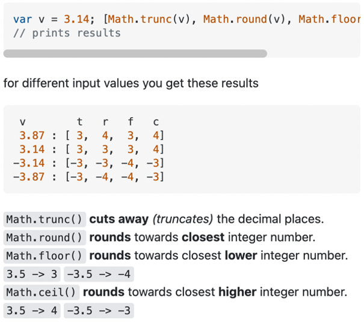
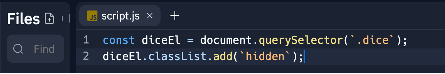
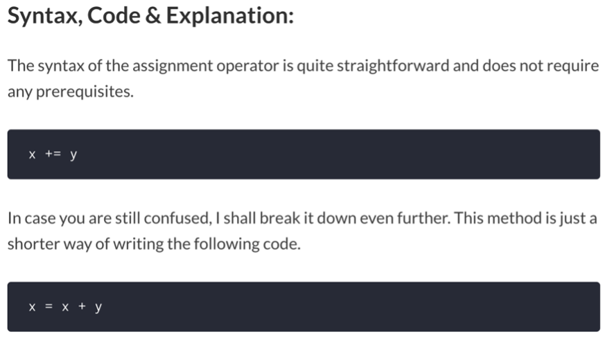

JavaScript Notes
JavaScript Notes
Math.trunc() vs Math.floor()

-
Math.trunc() just takes the whole number at the front and removes the
decimals.
-
Math.floor() rounds towards closest lower integer number.
For Example:
3.5 -> 3 OR -3.5 -> -4
-
Reference
classList Property
-
As seen here classList is used to add the hidden style onto the diceEl
element

-
The classList operator is used to add, remove or toggle classes onto an
element from .css into .html using nomenclature
element.classList.add(`class you wish to add`) .remove(`class you wish
to remove`) or .toggle(`class you wish to toggle`)
-
classList.toggle will add the class if it is not there, but remove
the class if it is already there
-
Reference
+= Operator

-
+= is the same as putting something equal to itself plus something else
-
As a general note this is usually used in functions/if statements and
for loops to store values that can then be used later to display things
such as scores in html documents so the accumulator variable as a
general rule MUST BE OUTSIDE OF THE FUNCTION OR LOOP
-
Reference